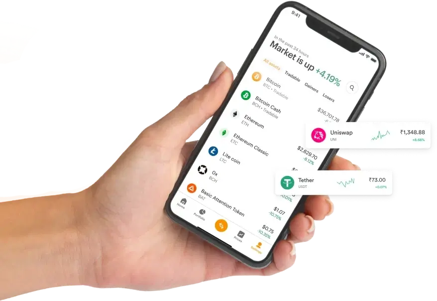
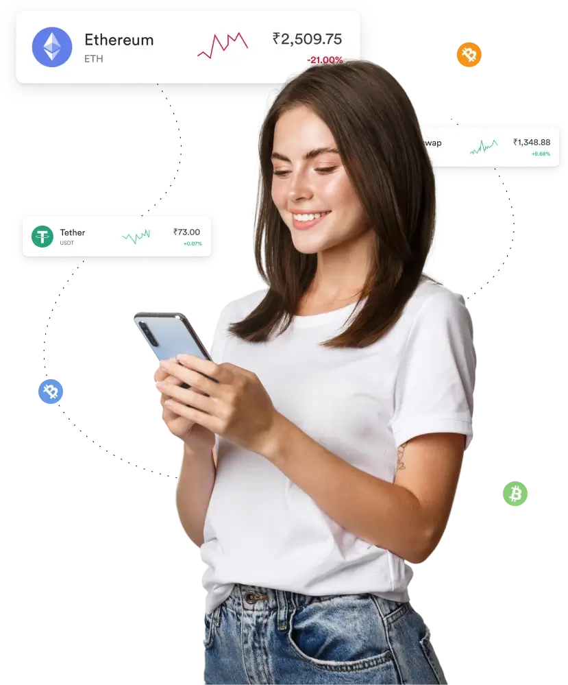
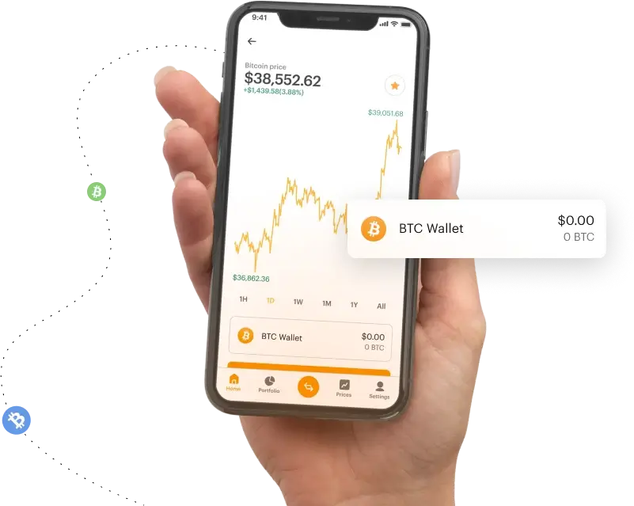

Ready to explore the global financial markets? Join a multi-asset automated trading platform covering Forex, Cryptocurrency, Futures, Indices, Metals, Shares and Traded Goods. Trading carries a high risk of losing money—capital is at risk.
Alpha AI's automated trading software allows you to trade across multiple markets with reduced manual input. Automation can help limit manual errors and missed opportunities, but it cannot remove market risk or guarantee any result. The system analyzes market data to support trading decisions and is designed to be accessible to beginners, although trading is not suitable for everyone and you should make sure you understand the risks first. You do not need to monitor the markets constantly—the software executes according to the preferences you set. Web-based and user-friendly, our platform works on desktop and mobile devices, giving you the flexibility to trade wherever you are. With Alpha AI, accessing global markets is simple, but the outcome of every trade remains uncertain.
Your security is a priority. Alpha AI partners with brokers who operate secure trading environments [INSERT VERIFIED BROKER SECURITY STANDARDS]. We aim to keep your privacy and personal information confidential and protected through [INSERT VERIFIED ENCRYPTION AND CYBERSECURITY MEASURES]. We take steps to safeguard your data, but no system can eliminate the risk of data breaches or cyber threats entirely. Our selection process for partner brokers includes [INSERT VERIFIED SELECTION CRITERIA]. Join the Alpha AI platform today and trade with clear information about the risks involved.
At Alpha AI, you're never alone in your trading journey. We understand that trading can be challenging, especially if you're just starting out. That's why our partner brokers offer personalized support designed to address your needs and concerns [CONFIRM SUPPORT HOURS AND CHANNELS]. Whether you have questions about account setup, trading tools, or technical issues, assistance is just a click away. Our support system aims to provide prompt and accurate guidance, helping you make your own informed decisions. Become part of a community where every trader, from novice to seasoned expert, can find the help they need.

Are you ready to take a closer look at the world's financial markets? Alpha AI is your gateway to Forex, Cryptocurrency, Futures, Indices, Metals, Shares and Traded Goods, all in one place. Prices can move quickly in either direction, and you may lose some or all of your capital. Make sure you understand the risks before you trade!
Review costs with full transparency. [INSERT VERIFIED FEE INFORMATION: spreads, commissions, overnight financing, deposit and withdrawal fees.] Trading costs reduce any gains and add to any losses, so always check them before you trade.
Our intuitive and beginner-friendly interface is designed to make trading easier to approach. Whether you're a seasoned trader or completely new to the markets, Alpha AI offers tools, educational resources, and a supportive community [CONFIRM RESOURCES AVAILABLE]. Register now and start learning about the markets today—trading involves risk and is not suitable for everyone.
JOIN ALPHA AI AND START TRADING TODAYAlpha AI App Platform Preview – See the Software in Action (illustrative only; not an indication of actual or future results)
Registering with Alpha AI is simple and secure. Complete the registration form provided above, and you will be matched with one of our partner brokers [CONFIRM MATCHING PROCESS]. Ensure the broker is regulated in your jurisdiction, and begin your journey into the financial markets. Registration is free and your personal data is handled in accordance with our Privacy Policy.
After signing up, an account manager will contact you to verify your details and help you explore various trading features. You'll receive support, guidance on market signals, trading robots, and insights on both fundamental and technical analysis to help you understand the tools and risks before you start trading.
When you're ready, deposit your initial investment of [CONFIRM MINIMUM DEPOSIT – original copy stated $250] to begin trading. With your account funded, access the trading dashboard and start trading your chosen markets. Only trade with money you can afford to lose. Our platform is designed to give you control over your trading parameters and provides ongoing support as you navigate the financial markets.
Alpha AI platform was developed to give users access to a range of global markets in one place. Automation can reduce the time spent on manual tasks—users set their preferences [INSERT VERIFIED DAILY SETUP TIME, IF ANY]—but it does not remove risk, and no profit or result is guaranteed.
Utilizing trading algorithms and technology, the system provides real-time market data and trading tools to support market participation. Even new investors should understand that fast-moving markets carry a high risk of loss, particularly when using leveraged products such as CFDs and futures.
Our selected broker partners provide trading environments with [INSERT VERIFIED BROKER DETAILS AND LICENCE DETAILS]. These brokers offer trading tools and resources to support your trading decisions.
At Alpha AI, safeguarding personal information is a priority. We implement [INSERT VERIFIED SECURITY PROTOCOLS] to help protect your data, allowing you to concentrate on managing your trading and your risk. Your financial security depends on informed decisions, and we encourage you to read all risk warnings.
This automated platform is designed to accommodate both novice and experienced traders across Forex, Cryptocurrency, Futures, Indices, Metals, Shares and Traded Goods. Its intuitive interface makes the trading experience straightforward for beginners, while providing customization options that allow experienced traders to refine their strategies. Platform availability is [CONFIRM 24/7 AVAILABILITY]; individual markets have different trading hours.
Beyond simplicity, Alpha AI provides tools that facilitate trading while maintaining the flexibility to adapt to changing market conditions. Market analysis and execution tools can support your decisions, but they cannot guarantee returns, making risk awareness essential for traders in the dynamic world of global markets.
ACTIVATE YOUR FREE TRADING ACCOUNT TODAY

Alpha AI App is designed to streamline and simplify trading across multiple markets, providing automated tools that can reduce daily trading effort. Users set their preferences, and the software executes according to those settings. Utilizing algorithmic trading technology and modern financial technology, our trading application aims to support your trading, but results are not guaranteed and losses can occur.
The platform is intuitive, highly customizable, and built to adapt to traders of all skill levels—from complete beginners to seasoned professionals. Trading carries a high risk of losing money, and past performance is not a reliable indicator of future results. Don't miss the opportunity to be part of this growing community. Join today and explore the markets.
Join Alpha AI and Explore the Markets Today!Discover what Alpha AI offers traders looking for a multi-asset automated trading solution:
Review all costs before you trade. [INSERT VERIFIED FEE INFORMATION: spreads, commissions, financing, deposit and withdrawal fees.]
Access Forex, Cryptocurrency, Futures, Indices, Metals, Shares and Traded Goods, with tools to support your own trading strategy.
No downloads required—trade directly from your browser on desktop or mobile. Enjoy an intuitive platform that's accessible to traders of all experience levels.
Algorithmic tools and market data support your trading decisions. Tools do not guarantee profits and cannot eliminate the risk of loss, particularly in volatile market conditions.
Registration is straightforward. Simply fill out our short form, verify your account, and begin trading once your account is verified and funded.
Platform availability: [CONFIRM PLATFORM AVAILABILITY]. Individual markets have different trading hours, and conditions can change quickly.
Start trading with as little as [CONFIRM MINIMUM DEPOSIT – original copy stated $250]. A modest deposit does not reduce risk; you may lose some or all of the capital you deposit.
Deposit and withdraw funds using [INSERT VERIFIED PAYMENT METHODS]. [INSERT VERIFIED PAYMENT FEES AND PROCESSING TIMES.]
Practice trading in our demo mode before entering live trades [CONFIRM DEMO AVAILABILITY]. Demo results do not reflect live trading conditions and do not predict live results.
Our support team is available [CONFIRM SUPPORT HOURS] to answer your questions and help resolve any issues.
Discover the tools Alpha AI offers across global markets:
Alpha AI utilizes VPS (Virtual Private Server) technology designed to support fast and stable trade execution. This is intended to reduce the impact of system outages or internet disruptions, although no system can fully eliminate outages, delays or slippage.
Alpha AI's Time Leap feature is designed to support faster trade execution [INSERT VERIFIED TECHNICAL DESCRIPTION]. Faster execution does not guarantee profitable trades, and slippage may occur in fast-moving markets.
Alpha AI offers comprehensive customization options, enabling you to tailor your trading preferences. Set parameters such as trading hours, risk levels, and preferred assets across Forex, Cryptocurrency, Futures, Indices, Metals, Shares and Traded Goods to match your trading strategy and risk tolerance.
Trading with Alpha AI requires minimal manual effort. Spend a few minutes setting your trading preferences, and our automated system will execute trades according to your settings. Automated trading carries risk and can result in losses.
Only trade with money you can afford to lose.
Join Alpha AI and Start Trading TodayAlpha AI is a gateway to multi-asset trading, connecting both beginners and professionals with partner brokers [INSERT BROKER AND LICENCE DETAILS]. Our partners provide an intuitive trading environment, support, and trading tools across Forex, Cryptocurrency, Futures, Indices, Metals, Shares and Traded Goods.
Alpha AI selects partner brokers and reviews their operations [INSERT VERIFIED REVIEW PROCESS AND LICENCE DETAILS]. Beware of imitation sites and always ensure you're using our official website. We recommend verifying your broker's regulatory status and compliance with local regulations before you deposit any funds.
You can start by depositing as little as [CONFIRM MINIMUM DEPOSIT – original copy stated $250]. Only deposit money you can afford to lose; a small deposit still carries the risk of losing the full amount.
Yes. Trading Forex, Cryptocurrency, Futures, Indices, Metals, Shares and Traded Goods carries a high risk of losing money. Leveraged products such as CFDs and futures can magnify losses as well as gains, and your capital is at risk. Always trade responsibly, using only money you can afford to lose.
No returns are guaranteed. Results vary widely, and you may lose some or all of your capital. Past performance is not a reliable indicator of future results, and Alpha AI does not predict or promise any market outcome.
Through our partner brokers [CONFIRM AVAILABLE INSTRUMENTS BY BROKER AND JURISDICTION], you may be able to trade seven markets: Forex, Cryptocurrency, Futures, Indices, Metals, Shares and Traded Goods (commodities). Availability may vary by broker, account type and country of residence, and some products may not be offered in your jurisdiction. Each market carries its own risks and trading hours.